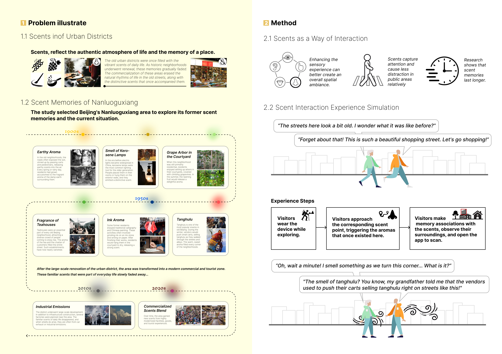
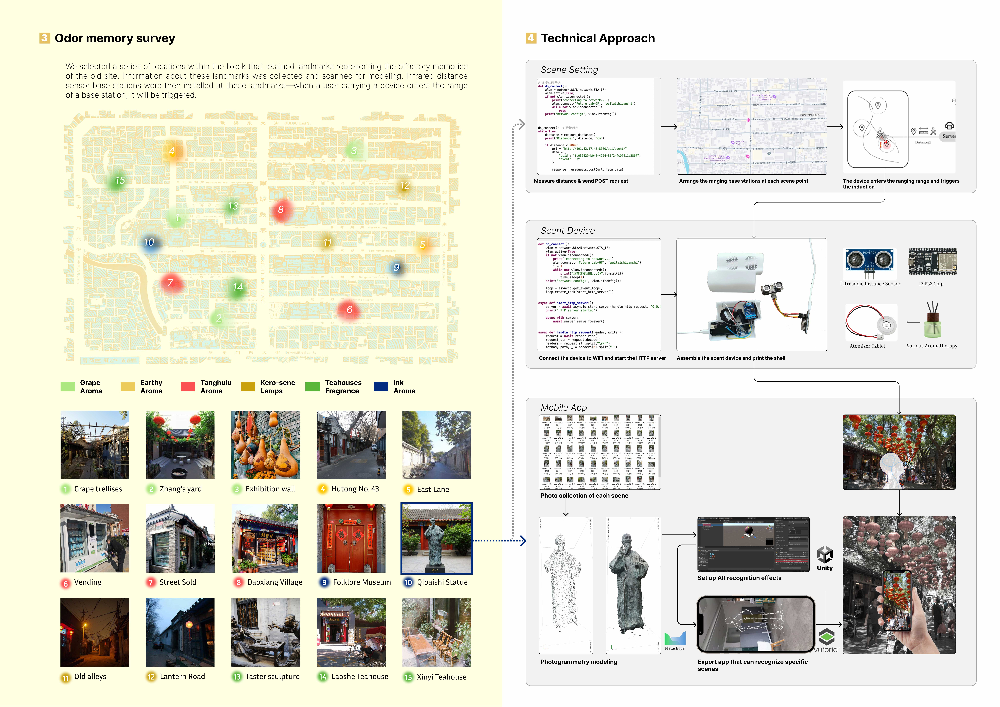
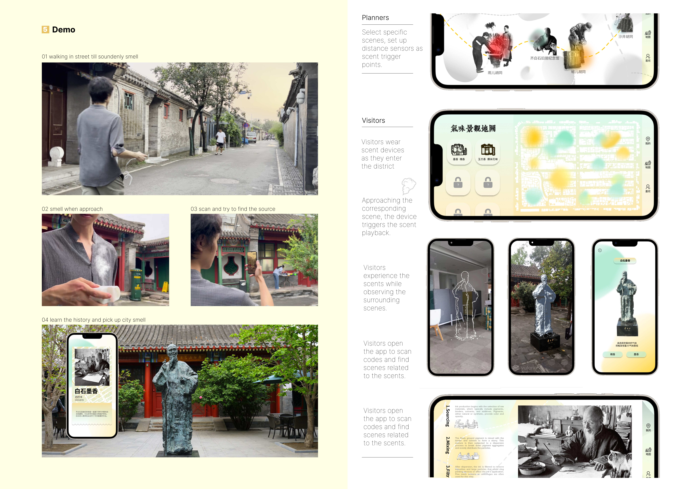

Development · 2023
Olfactory Memory Map
Odor memory–based hardware interaction and augmented reality development for historic neighborhoods.
Background
As historic neighborhoods underwent renewal, scent memories gradually faded. The commercialization of these areas erased the natural rhythms of life in the old streets, along with the distinctive scents that once accompanied them.
Method
As visitors approach a specific location, a scent related to historical memories is suddenly triggered. They look around the built environment, contemplate the source of the scent, and use a mobile app to scan and identify it, gaining insight into the past life memories associated with the place.



